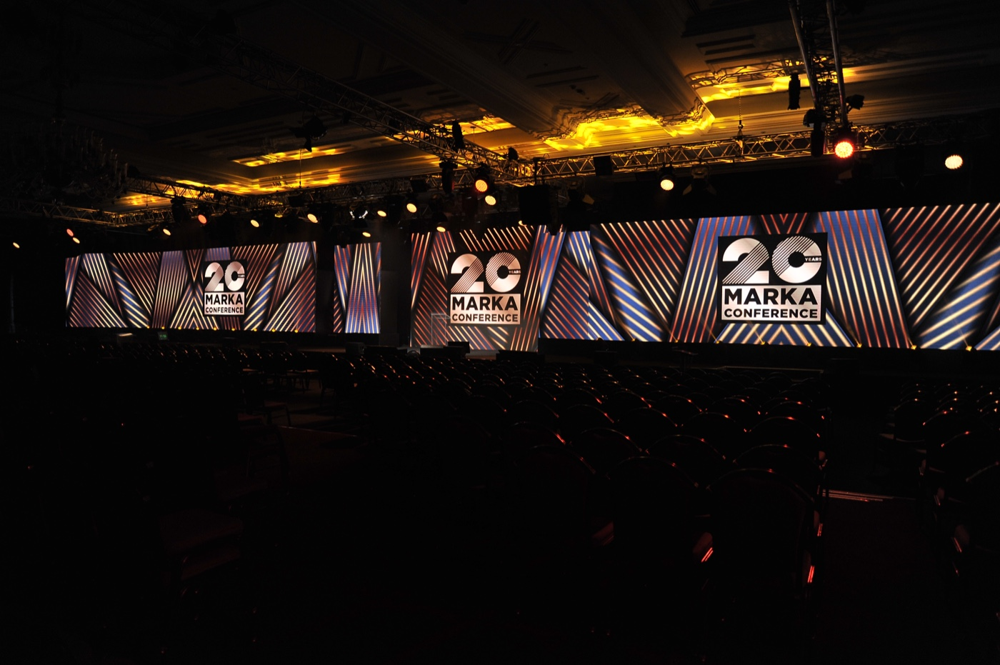

About MARKA London
Shaping What Comes Next
Ideas. Perspectives. Conversations that matter.
For more than 25 years, MARKA has been one of Istanbul’s leading ideas platforms, bringing together influential voices from across design, creativity, innovation, business and culture.
On 13 October 2026, MARKA begins its international journey in London with a special Capsule Edition, focusing on Design, Lifestyle and Cultural Influence.
Hosted at the Design Museum London, this one-day gathering will bring together a carefully curated audience for thought-provoking conversations, new perspectives and meaningful connections.
Join us for an exceptional day of ideas, encounters and conversations in an intimate setting created for exchange, discovery and inspiration.

The Conversation
MARKA London explores the ideas, people and cultural shifts influencing the way we design, live, choose, consume and experience contemporary luxury.
Through a curated series of conversations, the Capsule Edition will move across design, art, lifestyle, sustainability and cultural influence; from creativity and craftsmanship to changing notions of luxury, contemporary culture and the forces shaping what comes next.
Who Should Attend
MARKA London is conceived for leaders of the luxury industry, creative leaders, cultural tastemakers and influential minds shaping the worlds of design, architecture, fashion, lifestyle, culture and business.
A gathering for those who value original thinking, exceptional creativity and meaningful connections and who are curious about the ideas and cultural shifts shaping what comes next.